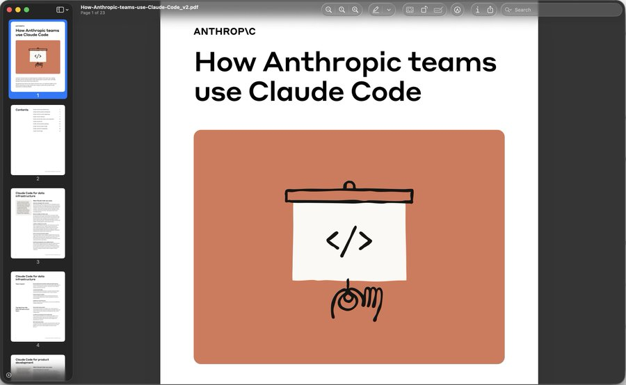
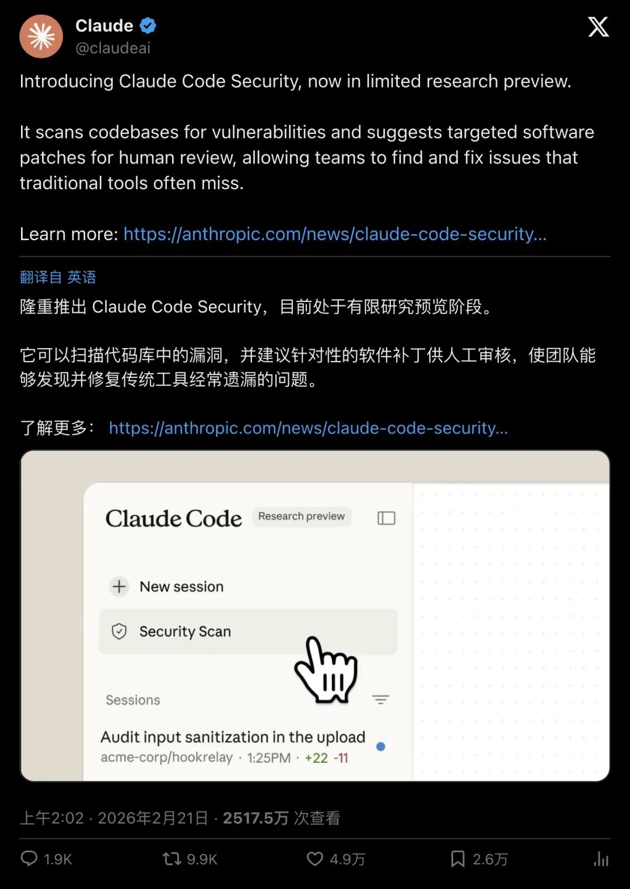
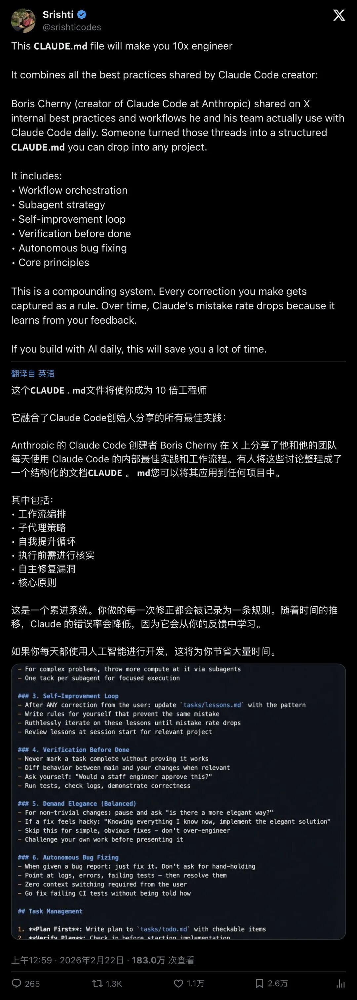
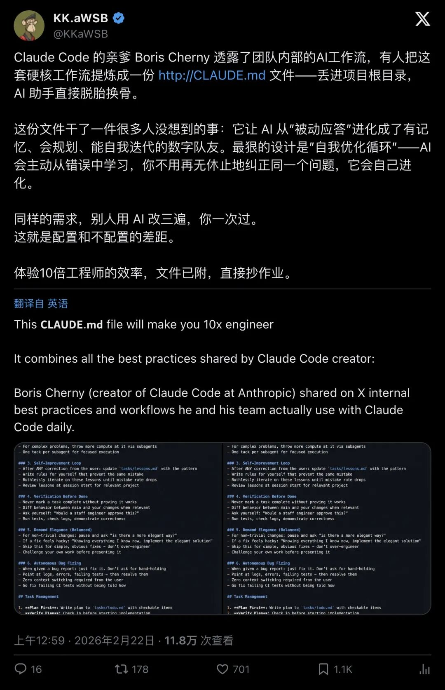
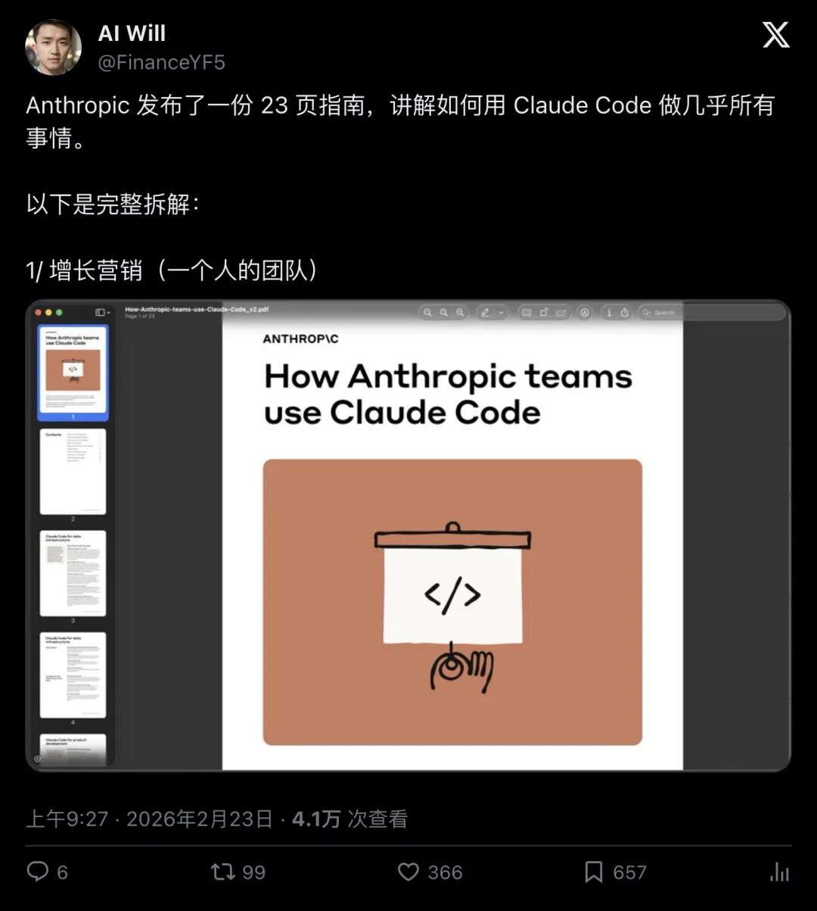

一份文件引爆全网
2026 年 2 月 21 日，一条来自 Anthropic 官方的推文悄悄点燃了导火索。
Claude 官方账号宣布推出「Claude Code Security」，一个能扫描代码库漏洞并自动建议补丁的新功能。这条推文的数据堪称恐怖——近 5 万赞，近万次转发，超过 2500 万次浏览。

▲ Claude 官方宣布 Claude Code Security，近5万赞，2500万次浏览
"Introducing Claude Code Security, now in limited research preview. It scans codebases for vulnerabilities and suggests targeted software patches for human review, allowing teams to find and fix issues that traditional tools often miss."
「隆重推出 Claude Code Security，目前处于有限研究预览阶段。它可以扫描代码库中的漏洞，并建议针对性的软件补丁供人工审核，使团队能够发现并修复传统工具经常遗漏的问题。」
但真正让开发者群体沸腾的，是紧随其后的一场「工作流泄密」。
Claude Code 的创始人Boris Cherny在 X 上分享了他和团队每天使用 Claude Code 的内部最佳实践。这些实战经验被迅速整理成了一份结构化文档——「CLAUDE.md」。
10倍工程师的秘密武器
一位名叫 Srishti 的开发者把这份文件的价值说得最直白。
"This 𝗖𝗟𝗔𝗨𝗗𝗘.𝗺𝗱 file will make you 10x engineer. It combines all the best practices shared by Claude Code creator."
「这个 CLAUDE.md 文件将使你成为 10 倍工程师。它融合了 Claude Code 创始人分享的所有最佳实践。」

▲ @srishticodes 的推文获得超过 1 万赞，183 万次浏览
这条推文直接爆了——超过 1 万赞，1300 多次转发，183 万次浏览。
那这份「CLAUDE.md」到底有什么魔力？
简单来说，它是一份放在项目根目录的指令文件。当 Claude Code 读取它之后，AI 的行为模式会发生根本性的变化。它会记住你的代码风格偏好，理解你的架构决策逻辑，甚至能主动从之前的错误中学习——再也不用你反复纠正同一个问题。
从「被动应答」到「数字队友」
中文科技圈的反应同样炸裂。
博主 @KKaWSB 的解读推文获得了701 赞和 11.8 万次浏览，他用了一个精准的比喻：

▲ @KKaWSB 的核心解读推文，701赞，11.8万浏览
「Claude Code 的创始人 Boris Cherny 透露了团队内部的 AI 工作流，有人把这套硬核工作流提炼成一份 CLAUDE.md 文件——丢进项目根目录，AI 助手直接脱胎换骨。」
这份文件最狠的设计是什么？是「自我优化循环」。
传统的 AI 编程助手，你每次打开对话都像在跟一个失忆的人合作。你得反复告诉它：我的项目用什么框架、我喜欢什么代码风格、上次那个 bug 是怎么修的。
有了 CLAUDE.md，AI 会主动从错误中学习。你不用再无休止地纠正同一个问题，它会自己进化。这让 AI 从一个「被动应答的工具」变成了一个有记忆、会规划、能自我迭代的「数字队友」。
真正拉开差距的是什么
博主 @akokoi1 的评论引发了更深层的思考，获得了522 赞和 10.2 万次浏览：
▲ @akokoi1 的深度评论，522赞，10.2万浏览
「这是我最近读过的最好的技术文章之一。真正拉开差距的，是你是否能系统地"管理上下文"。是否能让模型理解你的判断、你的取舍、你的"品味"，而不是每次都从零开始。长期投入，沉淀自己的结构，AI 才会真正变成生产力。」
这段话点出了一个被大多数人忽略的关键——「上下文管理」才是 AI 时代的核心竞争力。
会写 prompt 的人满大街都是。但能系统地把自己的判断、取舍、品味沉淀成结构化文档，让 AI 真正理解你的思维方式？这才是高手和普通人之间的鸿沟。
Anthropic 甚至为此发布了一份23 页的官方指南，手把手教你如何用 Claude Code 做几乎所有事情。

▲ @FinanceYF5 报道 Anthropic 发布 23 页 Claude Code 指南
冷水也要泼一泼
当然，狂热之中也有清醒的声音。
台湾开发者 @cyrilliu1974 直接泼了一盆冷水：
「我觉得别太神话老外所发的文章，他这个提示词有很多地方只是写了一种愿望，实际上应该做不到，或是没有足够明确定义，这对 LLM 来说，它就会过度拟合，随机生成结果，他这个提示词工程等级不高的。」
另一位开发者 @AlvinWeb3 则指出了更具体的问题：这份文件不太适合 MVP 阶段的产品。因为文档里要求 AI「自主修 bug」，会导致早期产品意外重构、scope 范围失控。而「Demand Elegance」（追求优雅）的要求容易把 MVP 推向过度工程化——MVP 阶段需要的是「能跑、可验证、迭代快」，而不是每次都追求最优雅的抽象。
还有用户反馈了实际使用中的尴尬：光改一个小功能就跑了 20 多分钟，AI 在逐页用 plan mode 思考每段代码，实际上不能直接照搬，还需要针对项目做个别优化。
这些反馈恰恰说明了一个道理——工具再强，也需要人来驾驭。CLAUDE.md 提供的是一套框架和思路，照搬全抄反而可能适得其反。真正的瓶颈在于团队能否持续迭代，把这套方法论适配到自己的业务逻辑中。
AI 编程的下一个战场
回头看这整件事，Boris Cherny 公开内部工作流的举动，释放了一个强烈的信号：AI 编程助手的竞争，已经从「模型能力」转向了「工作流设计」。
GitHub Copilot、Cursor、Claude Code……这些工具的底层模型能力正在快速趋同。谁能帮开发者建立更好的「上下文管理」体系，谁就能赢得下一轮竞争。
而对于普通开发者来说，这份 CLAUDE.md 文件的意义远超它本身。它告诉我们：与 AI 协作的最高境界，是把你的经验、判断和品味变成 AI 能读懂的「操作系统」。
当你的 AI 队友不再每次都从零开始，当它能记住你的偏好、理解你的决策、甚至主动从错误中进化——这才是真正的生产力革命。
你准备好写你自己的「CLAUDE.md」了吗？
— END —